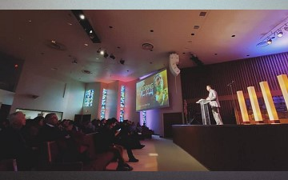
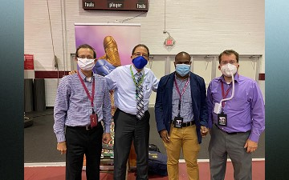

Week of Prayer
As a part of our homiletics training, the neighboring Keene Church allowed us to share a Week of Prayer with the students from the campus. Glory to God, visitors from all over the metroplex came to watch the series which led to decisions for baptism.
Evangelism
As the nation was beginning to quarantine for the first wave of COVID 19, our Field Evangelism had to adapt to a changing ministry and quickly. Our class unified to arrange an online evangelistic series which has reached more people than we could have ever anticipated. We used, Instagram, Facebook, and YouTube to host this 13-day series.
Series Link

Stellar Academic Training
Learning under some of the top theologians of this time has been a great honor and privilege. (from left to right)
Joaquim Azevedo, along with his wife Marcia, have been a great spiritual influence for the many students who have attended SWAU. He specializes in Biblical Archeology and Hebrew.
Renowned author Georg Rico specializes in prophetic studies.
Known and loved by all is Buster Swoopes who specializes in church revitalization.
Michael Campbell, Ellen White Historian and co-author of the Ellen White Encyclopedia, has authored several books of his own with his previous experience as a historian for the White Estate.
{kind=link}
{kind=link}
{kind=link}
{kind=link}